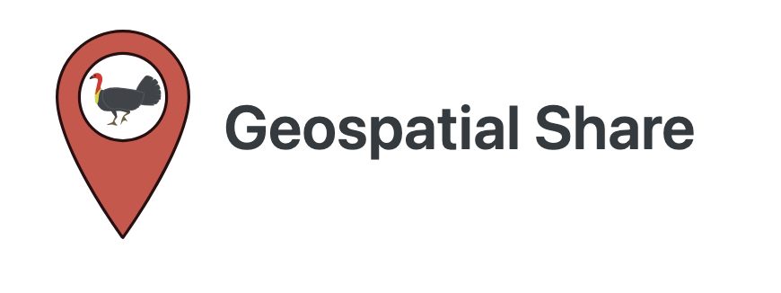

About

This training course was organized by the Geospatial Share Community of Practice based in Australia.
Our mission is to build a supportive and inclusive community where students, researchers, and professionals can grow their geospatial skills together. See the Geospatial Share website to see the other workshops and tutorials we have organized throughout the years.
Organizers
Mitch Rudge
Mitch created the GeoSpatial Share Community, completed his PhD at UQ, and now works as a Natural Capital Data Scientist at Bush Heritage Australia.
Catherine Kim
Catherine is a marine scientist at the Queensland University of Technology and passionate about upskilling students, researchers, and professionals with data science skills.
Session Leads
Jason Flower
Project Researcher at the Environmental Market Solutions Lab (emLab) at the University of California, Santa Barbara working on marine spatial planning and coastal and fisheries management on islands in the Caribbean, Pacific, and Western Indian Ocean. His work has helped guide marine spatial planning in Montserrat and Bermuda, and inform fisheries management in Barbuda, Curacao, the Maldives, and Montserrat.
Ralph Trancoso
(No description provided)
Sarah Chapman
(No description provided)
Rohan Eccles
(No description provided)
Charlotte Patterson
(No description provided)
Scott Forrest
(No description provided)
Brooke Williams
(No description provided)
Caite Kuemple
(No description provided)
Emma Hain
(No description provided)
About the organisers and supporters
This workshop was organised by Geospatial Share, a grassroots group of spatial enthusiasts whose mission is to build a supportive and inclusive community where students, researchers, and professionals can grow their geospatial skills together. See https://brisbane-geocommunity.netlify.app/ for more.
This workshop was made possible by generous contributions by members of the following organisations.


Geospatial Share
This training course was organized by the Geospatial Share Community of Practice based in Australia.
Our mission is to build a supportive and inclusive community where students, researchers, and professionals can grow their geospatial skills together. See the Geospatial Share website to see the other workshops and tutorials we have organized throughout the years.